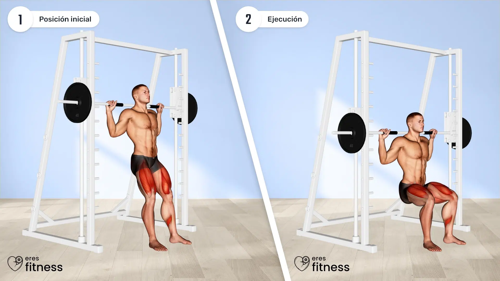
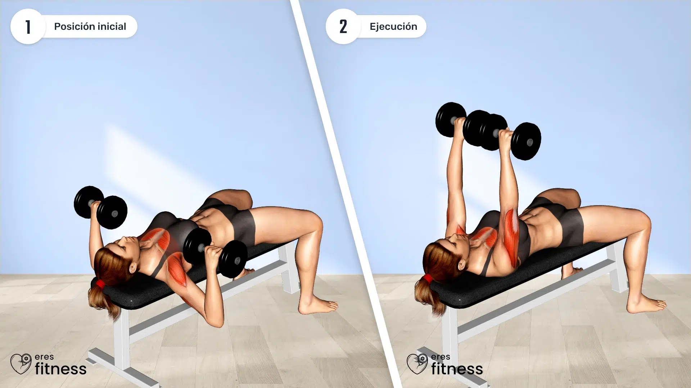
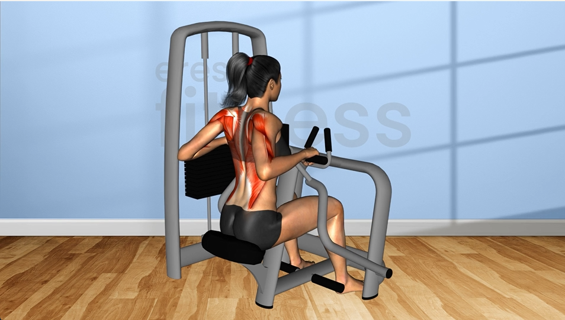
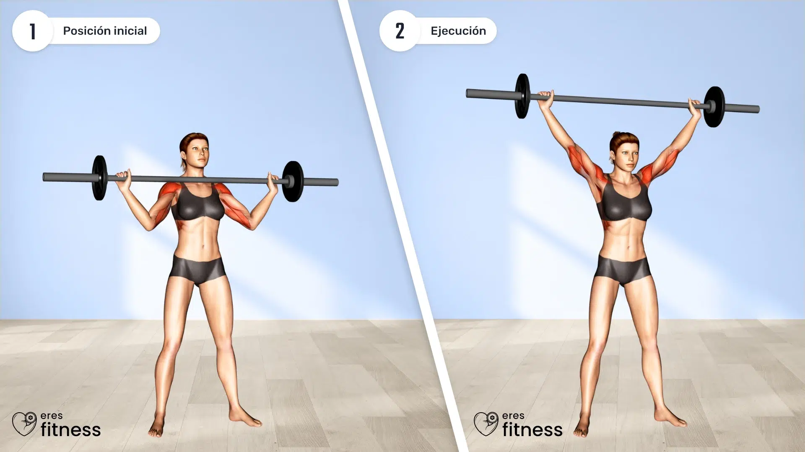
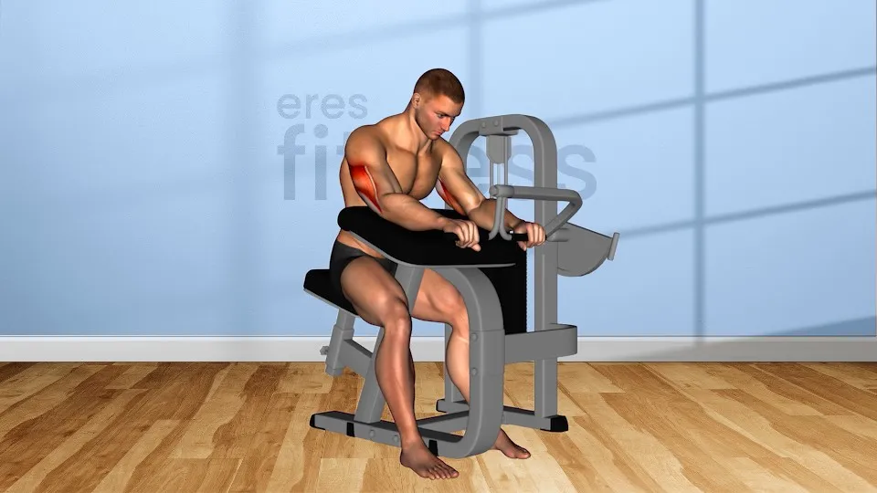
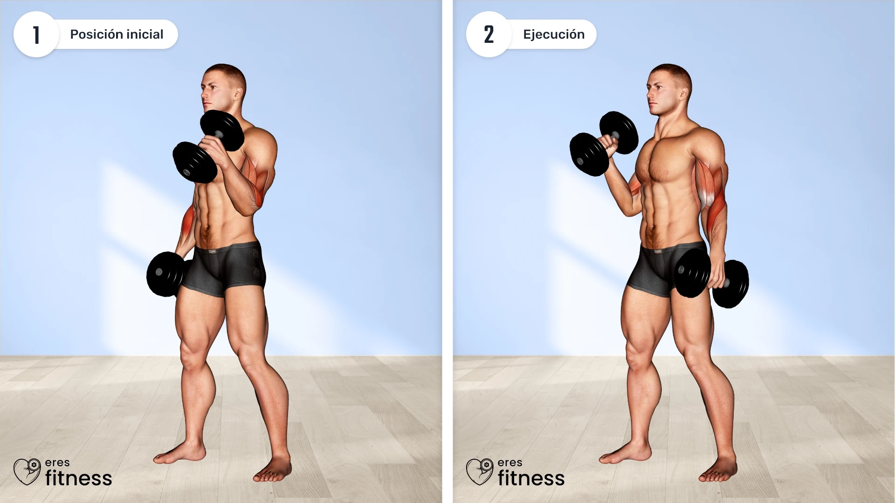
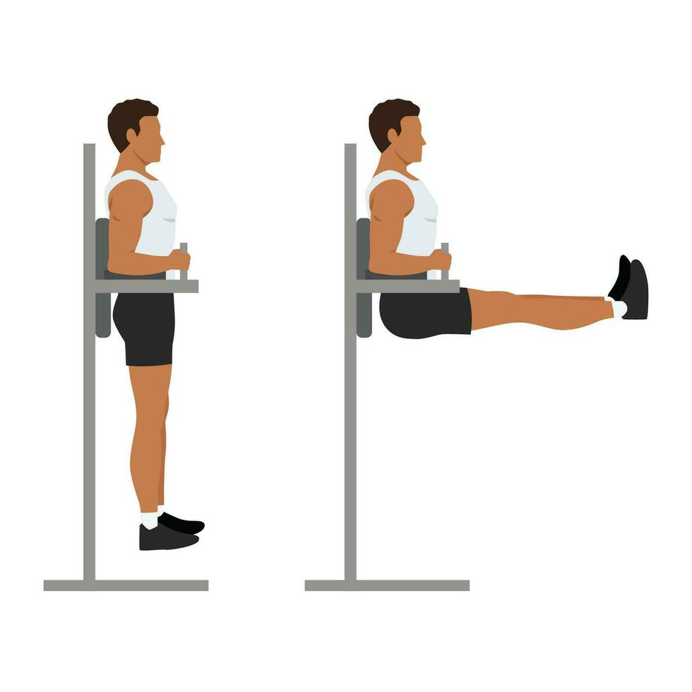

Viernes - Circuito Full Body y Cardio HIIT
Objetivo: Integrar todos los grupos musculares y estimular el metabolismo.
CALENTAMIENTO
10 MINUTOS EN ELÍPTICA A RITMO MODERADO
CIRCUITO DE FUERZA (3 RONDAS, CON 60–90 SEGUNDOS DE DESCANSO)
| Ejercicio | Dinámica | Demostración |
|---|---|---|
| Sentadillas barra-smith (Pesas: hack, sumo, goblet y frontal) | Baja en 2–3 segundos y sube en 1–2 segundos |

|
| Press de banca con mancuernas | Baja en 2–3 segundos y sube en 1–2 segundos |

|
| Remo sentado (En máquina hammer) | Realiza el movimiento en 2 segundos de tracción y 2 segundos de retorno, Remo hammer abierto: manos horizontales (sin despegar el pecho y sin codos después del tronco). Remo hammer cerrado: mano vertical (parado, con una mano en el cojín y pie vs el suelo o la maquina, llevar el codo a la cadera se trabaja mano x mano) |

|
| Press militar con mancuernas o barras | Baja en 2 segundos y sube en 1–2 segundos, manteniendo el core activado |

|
| Zancadas con peso | Baja en 2 segundos y sube en 1 segundo |

|
| Extensión de tríceps en polea | Realiza el movimiento de forma controlada |

|
| Curl de bíceps martillo | Eleva en 1–2 segundos y baja en 2–3 segundos |

|
| Elevación de piernas para abdomen | Realiza el movimiento de forma lenta y controlada |

|
CARDIO HIIT
CALENTAMIENTO: 5 MINUTOS A RITMO SUAVE
INTERVALOS: 10 MINUTOS (30 SEGUNDOS DE ALTA INTENSIDAD, 60 SEGUNDOS DE RECUPERACIÓN)
ENFRIAMIENTO: 5 MINUTOS A RITMO SUAVE